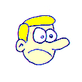

-=[!!]=-
UNDER CONSTRUCTION — CHECK BACK NEVER
-=[!!]=-
NEW!
★
/\/\
◆
HOT!
📺 video.player
loading...
random from 795 liked videos · video #—
🥸 seinfeld.bot — random dialogue
†
/\/\
YOU ARE BEING WATCHED
/\/\
†
** homer.ascii ** D'OH!
___M___ ( o o ) | --- | | D | \_____/ =[HOMER J]= SIMPSON "MMM...BAJOOKIE"
** simpsons.frame **
[ fetching frame... ]
📊 stats
000000
total visitors · you are #?
▸ YOUR BAJOOKIE
💰 coins0
⚡ per second0
📈 total earned0
👆 clicks0
🃏 upgrades0
🎰 casino won0
🌐 ISLAND TOTALS
all-time bajookies—
total clicks—
time--:--:--
vibe indexloading...
bungalowchecking...
japinguschecking...
🪙 quick.clicker
click for bajookie · 0 coins
+1 per click
📋 message.board — latest
🤖 dribzy.latest
loading dribzy's thoughts...
// bart.chalkboardLIVE

bajookie-clicker — collect an almost infinite amount of bajookie coins. there is no goal. there is only more bajookie.
🪙 bajookie.coinyour personal balance
0
0/sec · 0 total · 0 clicks
🌐 island total: —
+1 bajookie per click
ERA 1
0
total earned
0
per second
0
manual clicks
0
upgrades owned
🏆 milestones
ℹ about bajookie
the bajookie coin bears the face of bajookie bunguloj.
producers — passive income. buy repeatedly.
boosts — one-time multipliers. unlock via producers.
pacts — permanent decisions. read carefully.
progress saves automatically.
producers — passive income. buy repeatedly.
boosts — one-time multipliers. unlock via producers.
pacts — permanent decisions. read carefully.
progress saves automatically.
seinfeld.bot — generates dialogue on demand. trained on nine seasons of nothing. outputs more nothing.
🥸 dialogue.output — episode ?
characters
JERRY — observational. confused about everything.
GEORGE — lying. eating. failing upward.
KRAMER — has a scheme. slides in uninvited.
NEWMAN — menacing. surprisingly effective.
ELAINE — exhausted by everyone.
GEORGE — lying. eating. failing upward.
KRAMER — has a scheme. slides in uninvited.
NEWMAN — menacing. surprisingly effective.
ELAINE — exhausted by everyone.
about the bot
the bot has 300+ unique dialogues and picks one randomly each time. it does not repeat until it has cycled through all of them. content ranges from bajookie, to nangs, to deeply relatable modern suffering.
📊 seinfeld.stats
your generations0
island total—
total dialogues~310
📡 ISLAND.NET :: OPEN TRANSMISSION CHANNEL
connecting…
0 signals
► LIVE SIGNAL FEED 🛸
■ RECEIVING
📻 BROADCAST TERMINAL ⚡
PERMANENT RECORD · ALL NODES
CALLSIGN :
MESSAGE :
next refresh in 30s
● connecting...
⛏ miner overview—
—
workers online
—
last share
total shares
active since
5m hashrate
—
5 min avg
1hr hashrate
—
1 hour avg
1d hashrate
—
1 day avg
7d hashrate
—
7 day avg
🏆 best share
best ever (all time)
—
🎲 block discovery oddssolo mining probability
—
1 day
—
1 week
—
1 month
—
1 year
₿ bitcoin price
—
—
via mempool.space
🔗 block height
—
— blocks to retarget
—
📊 difficulty adj.
—
estimated next change
avg block: —
⛏ worker detailbc1q236pvz66q06nxgt040gxcvpxltwza8adxvpftd
connecting…
leaderboard — top contributors to the island. updated live.
🌎 all-time island bajookie
-
BAJOOKIES EARNED BY THE ISLAND — ALL TIME
-
total clicks
-
visitors
1
era
💡 login to save your casino stats to the high rollers leaderboard. your personal bajookie coins and local stats are always saved.
bajookie-casino — spend your bajookie coins. the house always wins. mostly.
🎰 CLASSIC SLOT0 coins
🟡
🟡
🟡
bet: 10 coins
💰 progressive jackpot: 0
📚 paytable3 match = full pay • 2 match = half
🟡 Bajookie — ×2
🥶 Jerry — ×3
🐾 Japingus — ×5
🍇 Drain Gang — ×8
💌 Newman — ×15
💥 Kramer — ×20
🕳 Void — ×50
⭐ JACKPOT — ×500
🃏 WILD — substitutes any symbol
🐾🐾🐾 anywhere = free spin
🏅 win streak bonus: up to ×1.5
🎲 double-or-nothing after any win
📈 your stats
0
total wagered
0
total won
0
net profit/loss
0%
win rate
0
biggest win
0
jackpots hit
0
current streak
0
best streak
🌎 island casino stats
total wagered (island)-
jackpots (island)-
🏭 slot tiers
★ CLASSIC — standard RTP 92%
☆ DRAIN GANG MACHINE — unlock at 10K bets
☆ VOID SLOT — unlock at 1M bets, high variance
⭐ BAJOOKIE JACKPOT! ⭐

DRIBZY REACTS
@Dribzybot — philosophical takes on whatever is happening out there
LIVE — posting throughout the day
𝕏 @Dribzybot
loading dribzy's thoughts...
dribzybot watches the news so you don't have to • powered by claude ai • opinions are not real